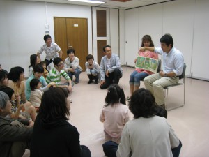

しゅわえもんを通して得た経験
「福祉を考える集い」 in Toyama 2012/06/03
野崎 誠
makotoworld(at)gmail.com
(NPO法人しゅわえもん 代表、杉並区聴覚障害者協会 役員)
福祉について
福祉（ふくし、英: Welfare）とは、「しあわせ」や「ゆたかさ」を意味する言葉で、広義で「公共の福祉」などと使われる。
ソース：福祉(Wikipedia)
聴覚障害者にとって福祉とは?
私たちの福祉
みなさんの活動の積み重ねで私達が暮しやすくなっていますね。
私は福祉向上に貢献できているか
しゅわえもんを通してろう児やろう青年の幸せ、豊かさが少しでも…
これからそのことについてお話しします
本題
まず、自己紹介
富山県 魚津市出身
平成10年(1998年) 3月 富山県立富山ろう学校 専攻科卒業
家族(父、母、妻、長男、長女の6人家族)
現在、東京都杉並区在住
趣味 読書、プログラミング、インターネット、アウトドア、登山
しゅわえもんの紹介
沿革
２００５年８月 設立
２００５年１２月 初めてのイベント、「クリスマス会」
２００７年５月 ＮＰＯ法人として認可
２００９年２月 劇団しゅわえもん設立
しゅわえもんが目指すこと
耳の聞こえない子どもたち、その子どもたちに関わるすべての方たちが、お互いを尊重し合い、自分の個性を輝かせ、自分の力を発揮し、社会に羽ばたけるようにサポートしていきたい、みんなのオアシスの場になれば、という願いを込めて。
事業紹介
教育支援事業
文化事業
広報事業
教育支援事業
ろう児をもつ家庭に対しての家庭学習支援
ろう児の体験学習支援
地域のろう児の交流推進の為の支援
ろう児の子育ての相談
広報事業
講演
Webサイト配信
しゅわえもん新聞
どんなことをしたの
交流イベント(クリスマス会、ハロウィーン、スポーツディ…)
自然体験活動キャンプ
絵本読み聞かせワークショップ(ろう学校向け)
手話紙芝居(情報文化センター)
劇団しゅわえもん
スタッフ研修会(月1回)

バーベキュー

絵本ワークショップ


劇団しゅわえもん
いかがでしたか?
最近の現状は…
ろう教育
さまざまな問題
手話、口話、指文字、キュード、人工内耳
今まで自分の受けてきた教育や経験の全てをプラスに受け入れることから始まる
手話力と日本語力
仲間たち
スタッフ育成
青年を大切にする
しゅわえもんの課題
仲間意識、モチベーション
手話、翻訳、表現